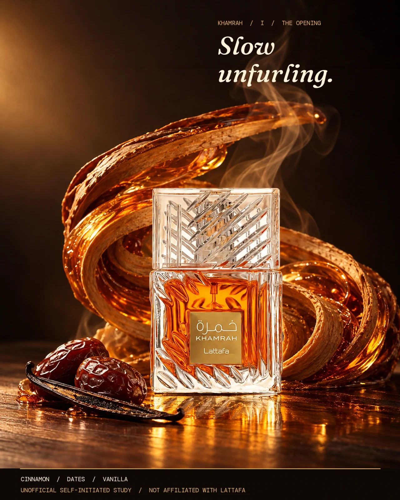
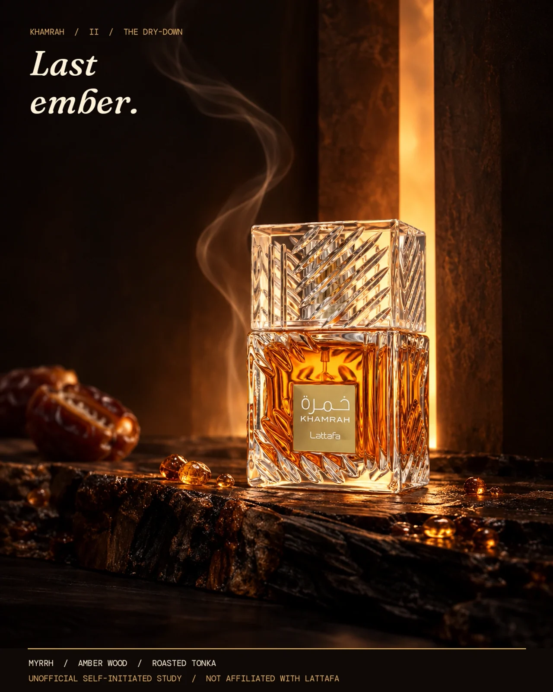

SLOW UNFURLING
Warm spice and woods translated into an unfolding space.

The idea
Rather than line up fragrance notes as props, the campaign makes warmth architectural: amber light moves through folds, then settles into a last ember.
Making the world
Cinnamon, dates, vanilla and amber inform colour and atmosphere. The Arabic and fine package details in the generated render need verification.
The series
